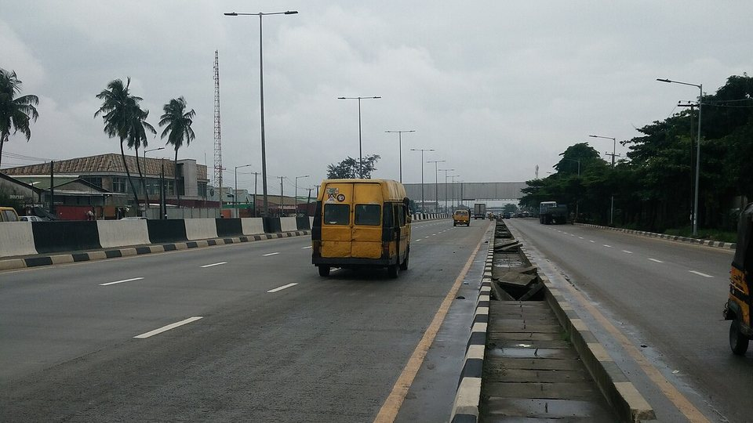

Third Mainland Bridge rehabilitation
Lagos. Further rehabilitation works on the bridge were completed in 2024.
Browse the directorySupporters of the Renewed Hope Agenda
An independent platform for Nigerians who back President Bola Ahmed Tinubu's 2027 re-election: explore the agenda, check the record with sources, and take part peacefully.
About the President
Bola Ahmed Tinubu trained as an accountant, served as Senator for Lagos West, was Governor of Lagos State from 1999 to 2007, and became Nigeria's 16th President in May 2023.
The full biography, education and timeline are on a dedicated page.
Read the full biographyRenewed Hope Agenda
Each page sets out the commitments in plain language, with the page of the document behind every one.
What the Renewed Hope Agenda is building, sector by sector.
Roads, bridges, rail, airports and ports are being built and rehabilitated across the country.
Across the 36 states, the FCT and nationwide programmes.
Fiscal, monetary and industrial reform to create jobs and broaden prosperity.
Teacher training, community school boards and technical education.
Health insurance for 40% of Nigerians and a clinic within a 30-minute walk.
More of the power already generated reaching homes and businesses.
Projects the administration is delivering across the country.
Lagos. Further rehabilitation works on the bridge were completed in 2024.
Browse the directory
Lagos. Commissioned in May 2024 and reported completed.
Browse the directory
Enugu. Concession handed over in June 2026, with rehabilitation planned.
Browse the directorySecond-term vision
The 2027 manifesto sets out what a second term will deliver, in the campaign's own words.
Read the manifesto pageFour pillars and eight priorities, quoted word for word.
Ideas supporters want debated, clearly labelled as unofficial.
City and Community Response for Good Governance (CCRGG) took part in a mega rally in Port Harcourt backing the President's re-election initiative.
Volunteer, join a local support group or help a neighbour check their voter registration. Everything is voluntary.
Newsletter
Occasional updates only. You can unsubscribe at any time.